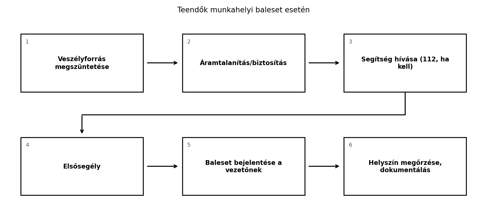

A hajnali pékségben a tanuló a fánksütő mellett áll. A zsír lassan füstöl, a sütőlemez szélén zsírcsepp serceg. Egy pillanatra hátranéz, a keze megbillenti a meleg zsíros tepsit, és a forró zsír a csuklójára fröccsen. A mögötte dolgozó pék felkiált, valaki vizet ragad, hogy a zsírfröccsenést leöblítse. A tanuló nem tudja, mi a helyes sorrend: adjon hangos segélykiáltást, hűtse a kezét, vagy előbb a tüzet próbálja megfékezni? A helyes válasz: a sérült csukló azonnali, legalább 20 perces hűvös folyóvizes hűtése (a fánksütő hőforrását előbb kapcsoljuk le, ha ez biztonságos); vizet csak az égő zsírra tilos önteni. Ez az alfejezet éppen az ilyen helyzetekre tanít: a baleset utáni teendőket, az elsősegélyt és a tűzvédelmet a sütőüzemben.
A baleset után a tanulónak gyorsan, de rendben kell cselekednie. A legfontosabb az, hogy először a további veszély kizárása következzen, ne a sérült mozgatása vagy a tűz oltása legyen az első.

A folyamat nem mindig lineáris: ha a zsírtűz gyorsan terjed, akkor a tűzjelzés és a menekítés előbbre kerülhet. A sorrendet a helyzet dönti el, de a veszélyforrás megszüntetése nélkül ne nyúljunk a sérülthöz vagy az égő berendezéshez.
Definíció. Baleset az emberi szervezetet ért olyan egyszeri, hirtelen külső hatás, amely sérüléssel, mérgezéssel vagy halállal jár. Munkabaleset az a baleset, amely a munkavégzés során vagy azzal összefüggésben következik be, függetlenül attól, hogy a sérült milyen szerepet játszott az eseményben (például figyelmetlenség, más munkatárs hibája vagy gépmeghibásodás). A munkába jövetel és hazamenetel közben bekövetkező baleset (közlekedési baleset) nem feltétlenül munkabaleset, hanem külön szabályok szerint minősül (ellenőrizendő: a hatályos munkavédelmi törvény fogalmi pontjai).
Definíció. Foglalkozási megbetegedés a munkakörülmények hatására kialakuló, fokozatosan jelentkező egészségkárosodás, például a lisztpor okozta légzőszervi megbetegedés vagy a tartós kényszertartásból, nehéz tömegű anyagmozgatásból eredő mozgásszervi elváltozás. Ez nem hirtelen baleset, hanem hosszú idő alatt jön létre. A pék szakmában a lisztpor-asztma és a kéz, csukló ismétlődő terhelése fontos kockázat (ellenőrizendő: a foglalkozási megbetegedések bejelentési rendje).
A munkabaleseteket és a foglalkozási megbetegedéseket a munkáltató köteles nyilvántartani, kivizsgálni, a súlyos eseteket a munkavédelmi hatóságnak bejelenteni. A tanulónak az a feladata, hogy azonnal jelezze az oktatójának vagy a műszakvezetőnek, és a helyszínt ne változtassa meg, amíg a kivizsgáló le nem zárja a vizsgálatot.
Előírás. A munkavédelemről szóló törvény előírja, hogy a munkáltató köteles a munkabaleseteket kivizsgálni, nyilvántartani, és a súlyos munkabaleseteket a munkavédelmi hatóságnak bejelenteni. Az önálló vállalkozói tevékenységre és a szakképzésben részt vevő tanulókra is vonatkoznak a szabályok, ha a gyakorlati képzés során munkabaleset következik be. A bejelentés és a kivizsgálás részletes rendjét külön rendelet szabályozza (ellenőrizendő: a hatályos munkavédelmi törvény és a munkabalesetek kivizsgálásáról szóló rendelet).
A baleset után a teendőket a baleseti teendők láncát érdemes megjegyezni: veszély megszüntetése → áramtalanítás → segítség hívása → elsősegély → bejelentés → helyszín megőrzése. Nem kell pontosan ebben a sorrendben, de a veszélyforrás kizárása nélkül ne kezdjünk beavatkozásba.
Gépbiztonság. A baleset helyszínén minden beavatkozás előtt győződjünk meg arról, hogy a gép leállt, áramtalanított, és újraindítás ellen biztosított. A vészleállító a gépet megállítja, de nem mindig szünteti meg a feszültséget; ezért a főkapcsolóval vagy megszakítóval is le kell választani, és az áramellátás megszűnését ellenőrizni kell, mert egyes gépek nem válnak le teljesen. Soha ne nyúljunk futó gépbe, és ne próbáljuk a sérültet a gépből kihúzni az áramtalanítás előtt.
Égés és forrázás. Figyelem. A sérült testfelszínt azonnal, bő folyó vízzel hűtsük legalább 20 percig (ellenőrizendő: hatályos elsősegély-irányelv, pl. ERC/OMSZ tananyag). A víz hőmérséklete hűvös legyen (hideg, de ne jéghideg). Az égés fokozata: elsőfokú (bőrpír), másodfokú (hólyag), harmadfokú (fehér vagy szenes, érzéketlen bőr); orvosi ellátás kell hólyagos, kiterjedt, arcot, kezet vagy ízületet érintő, illetve vegyi égésnél (ellenőrizendő: hatályos elsősegély-tananyag). A hűtés megállítja a hő terjedését a szövetekben, csökkenti a fájdalmat és a duzzanatot. A ruhadarabot ne tépjük le, ha a bőrhöz tapadt; a hűtés után tiszta, nem szálazó lappal fedjük le. Ne kenjük zsírral, olajjal, fogkrémmel, ne szúrjuk fel a hólyagot. Súlyos, kiterjedt égésnél azonnal mentőt hívunk.
Vágás, vérzés. A vágott sebet tiszta vízzel óvatosan öblítsük le. A vérzést a sebre helyezett steril gézlap vagy tiszta textília közvetlen nyomásával csillapítsuk. A nyomókötést ne vegyük le, ha átvérzett, tegyünk rá újabb réteget. A sérült végtagot emeljük a szív szintje fölé, ha nincs törés gyanúja. Nagy, erősen vérző sebnél, illetve ha a vérzés nem áll el 10 perc alatt, hívjunk mentőt. A sebbe fúródott tárgyat (pl. késhegy, szilánk) ne húzzuk ki, hanem körülpárnázva rögzítsük. A sérült kezén lévő kesztyűt óvatosan, szükség esetén felvágva távolítsuk el, hogy a sebre közvetlen nyomást gyakorolhassunk; a sebre tapadt anyagot ne tépjük le (ellenőrizendő: elsősegély-tananyag).
Zúzódás, rándulás. A zúzott, ütött testrészt nyugalomba kell helyezni és hideg borogatással hűteni. Ha a bőr sérült, a nyílt sebet fertőtleníteni kell. Duzzanat, deformitás, erős fájdalom esetén törés gyanúja merül fel; ilyenkor a végtagot rögzíteni kell, és orvosi ellátást kell hívni.
Áramütés. Áramütésnél a legnagyobb veszély az, hogy a beavatkozó is áramütést szenved, ha megérinti a sérültet. Először az áramforrást kell leválasztani: kapcsoljuk le a gép főkapcsolóját vagy az elosztó megszakítóját, illetve húzzuk ki a dugaszt. A vészleállító a gépet megállítja, de nem mindig szünteti meg a feszültséget, ezért áramütésnél önmagában nem elég. Csak akkor érintsük a sérültet, ha az áramkört biztosan megszakítottuk. Ezután ellenőrizzük a tudatot és a légzést. Ha a sérült nem reagál és nem lélegzik normálisan, azonnal hívjuk (vagy hívassuk) a 112-t, kérjünk AED-t, és kezdjük meg az újraélesztést (ellenőrizendő: hatályos újraélesztési irányelv). Az áramütött embert akkor is orvoshoz kell vinni, ha magánál van, mert belső szervi sérülés, szívritmuszavar később is jelentkezhet.
Ájulás. Ha valaki rosszul lesz, ájul, fektessük le, emeljük fel a lábát, és biztosítsunk friss levegőt. Ne adjunk folyadékot, ha csökkent tudatállapotú. Ha nem tér magához néhány másodpercen belül, hívjunk mentőt. A pékségben a hőség, a kiszáradás, a lisztpor vagy a kemence közelében fellépő szén-monoxid is okozhat ájulást; ilyenkor a sérültet azonnal távolítsuk el a veszélyes helyről, de csak ha biztonságos.
Mentőhívás. A 112-es számon kell a pontos helyszínt, a sérülés jellegét, a sérültek számát, a hely szintjét, a kapu számát, a telefonszámot megadni. Ne szakítsuk meg a hívást, amíg a diszpécser engedélyt nem ad. A pékségben jó, ha egy munkatárs a kapunál várja és eligazítja a mentőt.
A tűz három feltétele: éghető anyag, oxigén és gyújtóforrás. A negyedik tényező a kémiai láncreakció, amit a korszerű oltóanyagok megszakítanak. A pékségben éghető anyag a liszt, a zsiradék, a papír, a fa rekesz, a textil, a csomagolóanyag. Gyújtóforrás a kemence, a gázégő, a villamos hiba, a forró felület, a dohányzás, a hegesztés szikrája.
A tűzmegelőzés alapelvei:
A tűzoltó készülékek kiválasztása az égő anyag tűzosztálya alapján történik. A tűzosztályokat az MSZ EN 2 szabvány jelöli (A, B, C, D, F; ellenőrizendő: hatályos szabvány), a készenlétben tartást az OTSZ írja elő.
| Tűzosztály | Égő anyag a pékségben | Megfelelő oltóanyag | Tilos vagy veszélyes | Megjegyzés |
|---|---|---|---|---|
| A | fa, papír, textil, liszttel szennyezett rekesz | víz, A osztályú poroltó | – | A lisztes csomagolóanyag parázslik, utólagos víz oltás kellhet. |
| B | éghető folyadék (oldószer, tisztítószer) | hab, B poroltó, CO2 | vízsugár | A pékségben ritkább, de a takarítószereknél előfordul. |
| C | éghető gáz, pl. földgáz a kemencénél | Elsőként a gáz elzárása (ha biztonságosan elérhető); égő gázsugarat elzárás nélkül nem oltunk, mert a kiáramló gáz robbanóelegyet képezhet; poroltó csak a környezet védelmére vagy az elzárás érdekében (ellenőrizendő: OTSZ, tűzvédelmi szabályzat) | víz | Tűzoltóság értesítése; ha a gázszivárgást nem lehet elzárni, azonnal hívjunk tűzoltót. |
| D | fémporok (pékségben ritka) | speciális D oltópor | víz | Csak műszaki érdekesség. |
| F | étolaj, zsír a fánksütőben | F osztályú zsírtűzoltó, tűzoltó takaró, fémfedő | víz, A/B/C poroltó | A víz gőzrobbanást okoz, lásd a zsírtűznél. |
Előírás. Az Országos Tűzvédelmi Szabályzat (OTSZ) szerint a létesítményekben a tűzvédelmi kockázatnak megfelelő oltóanyagot és tűzoltó készüléket kell készenlétben tartani, és a dolgozókat tűzvédelmi oktatásban kell részesíteni. A készülékeket rendszeresen ellenőriztetni kell, a hibás vagy lejárt felülvizsgálatú készüléket ki kell vonni a használatból (ellenőrizendő: a hatályos OTSZ vonatkozó fejezete, a tűzoltó készülékek és a tűzvédelmi oktatás követelményei). A pékségben a tűzoltó készülékek elhelyezését a tűzvédelmi szabályzat és a tűzvédelmi kockázatértékelés határozza meg.
A hordozható tűzoltó készüléket akkor tudod gyorsan és jól használni, ha a részeit és a címkéjét előre ismered. A lenti rajzon a műszakkezdéskor is ellenőrizhető részek számozva szerepelnek: a címke (2) mutatja, mely tűzosztályokra alkalmas a készülék; a nyomásmérő (3) mutatója a zöld mezőben álljon (tárolt nyomású készüléknél); a biztosítószeg plombája (4) legyen ép; a felülvizsgálati címkén (8) a következő felülvizsgálat dátuma ne járjon le. A használat négy lépése (A–D): a szeg kihúzása, a szórófej a tűz tövére, a kar lenyomása, söprő mozgás – a széllel, huzattal háttal állva.
A rajz általános kivitelt mutat; a valódi készüléken a címke és a kezelési útmutató az irányadó. Gyakori hiba, hogy a szórást a lángok tetejére irányítják – a tűz tövére kell. A HTML-kiadásban a részekre mutatva megjelenik az ellenőrzési szempont, a használat lépései pedig egyenként nagyíthatók.
Definíció. Zsírtűz az étolaj, zsír, húsolaj, vaj meggyulladása, amikor a zsír a tűzforrás hatására túlmelegszik, eléri az öngyulladási hőmérsékletét, és lángra lobban. A pékségben jellemző helyszín a fánksütő, az olajsütő, a zsíros tepsik, a forró sütőlemez. A zsír a folyadék felszínén ég, nem keverhető vízzel.
Szabály. Zsírtűzre tilos vizet önteni. A víz a forró zsírral érintkezve azonnal gőzzé alakul, térfogata nagyságrendekkel megnő, és a gőzbuborék a forró zsírt szétfröcsköli. A szétfröcskölő zsírcseppek hatalmas felületen égnek, a tűz robbanásszerűen szétterjed, égési sérülést okoz. Ugyancsak tilos hagyományos A/B/C poroltót zsírtűzre használni, mert a zsírfröccsenést és a visszagyulladást nem akadályozza meg biztonságosan. A helyes oltóanyag az F osztályú zsírtűzoltó készülék, vagy a tűzoltó takaró, fémfedő, sütőlemez letakarás. A CO2-oltó korlátozottan alkalmas, mert a zsír újragyulladhat, ha a felület forró marad.
Gyakorlat. Ha a fánksütőben a zsír meggyullad:
A lenti képsor 1–4. kockája ugyanezt a sorrendet mutatja egy égő fánksütőn, a letakarást két kockára bontva (2–3). A 2. kockán a takaró sarkai a kézfej köré vannak hajtva, és a takaró pajzsként védi a testet; a 3. kockán a takarót magunktól elfelé terítjük, hogy a lángok ne felénk csapjanak. Az áthúzott kocka azt mutatja, miért tilos a víz: a forró zsírba jutó víz (5) azonnal gőzzé válik, és az égő zsírt szétfröcsköli (6).
A letakart tartályról a takarót vagy a fedőt ne emeld fel, amíg a zsír ki nem hűlt, mert a forró zsír újra lángra lobbanhat. A HTML-kiadásban a képsor lépésenként lejátszható; a tiltott esetet a „Mi lenne, ha vizet öntenék?” gomb mutatja.
A liszt éghető szerves anyag. Leülepedett állapotban éghető, de robbanásveszélyt akkor jelent, ha finom porfelhő képződik a levegőben. A porrobbanás feltételei: éghető por, megfelelő por/levegő arány, oxigén, hatásos gyújtóforrás, és zárt vagy részben zárt tér, amelyben a nyomáshullám kialakulhat.
Szabály. A lisztpor-robbanás megelőzése a pékségben:
A lisztpor-robbanás különösen a liszt silók, a szállítócsigák, a porkamrák, a zsákürítő állomások közelében veszélyes (részletesen lásd Liszttárolás és lisztszállítás berendezései alfejezetben).
Egy kis pékségben a tanuló hajnalban kihúzta a forró sütőlemezt, és a zsíros csepp a védőkesztyű szélénél a csuklójára fröccsent. A munkatársa kenőcsöt kent a sérülésre, mert úgy tudta, az „beszívja a meleget”. A mentőorvos szerint a kenőcs a hőt a bőrben tartotta volna, és a gyógyulás lassabb lett volna; az egyetlen helyes kezelés a hűvös folyóvizes hűtés lett volna. A tanulság: a pékségben az elsősegély-tudás nem formális vizsgatétel, hanem napi készség, és a tűz- és balesetveszélyes helyeken minden dolgozónak ismernie kell a helyes teendőt.
Ellenőrzőlista (baleset utáni teendők).
Higiénia. A vérrel, testnedvvel szennyezett eszközt, kötözőanyagot a veszélyes hulladékok közé gyűjtsd; a kezedet alaposan mosd meg, és a munkaruhádat cseréld le, ha vérrel szennyeződött.
A baleset és tűz elleni védelem minőségi ellenőrzése nem hagyatkozhat emlékezésre. A munkáltatónak ellenőriznie kell, hogy a dolgozók elvégezték-e a munkavédelmi és tűzvédelmi oktatást, a tűzoltó készülékek lejáratát, a menekülési útvonal szabad voltát, a vészleállítók működését. A tanuló naponta ellenőrizze, hogy a kijelölt tűzoltó készülék a helyén van, a nyomásmérő zöldben, a fánksütő hőfokszabályzója nem hibás, és a lisztes padlót azonnal takarítják.
Önellenőrzés – válaszok:
A feladatok megoldásai:
A sütőüzemben a baleset és a tűz gyors, de tudatos cselekvést igényel. A munkabaleset a munkavégzés során vagy azzal összefüggésben bekövetkező hirtelen, sérülést okozó esemény; a foglalkozási megbetegedés hosszabb idő alatt alakul ki. A baleset utáni teendők sorrendje: veszélyforrás megszüntetése, áramtalanítás, segítség hívása (életveszélynél azonnal 112), elsősegély, bejelentés, helyszín megőrzése. Az égést hűvös folyóvízzel hűtjük, a vágást nyomókötéssel csillapítjuk, az áramütésnél először áramtalanítunk. A tűz oltásához a tűzosztálynak megfelelő oltóanyagot választunk: zsírtűzre F osztályú készüléket, tűzoltó takarót; vizet zsírtűzre tilos önteni, mert gőzrobbanás keletkezik. A lisztpor-robbanás feltétele az éghető porfelhő, oxigén, gyújtóforrás és zárt tér; megelőzése a silók, szállítóvezetékek robbanásbiztos kialakításával, földeléssel, szikramentes szerszámokkal és porfelverés nélküli takarítással történik. Ezek a fogalmak visszaköszönnek a villamos biztonságnál, a liszttárolásnál, a kemence gázégőinél és a fánksütésnél.
A szöveg a munkavédelmi törvény (1993. évi XCIII. törvény, ellenőrizendő a hatályos szöveg és a munkabaleset bejelentési rend), az Országos Tűzvédelmi Szabályzat (OTSZ, ellenőrizendő a hatályos rendelet), a tűzoltó készülékek osztályozása (MSZ EN jelölés, ellenőrizendő az aktuális szabvány) és a porrobbanás-védelmi szabványok (ellenőrizendő: a lisztpor zónabesorolás) alapján tanít. A munkabalesetek kivizsgálásáról szóló rendelet és a foglalkozási megbetegedés bejelentési rendje a kiadás előtt ellenőrizendő. A fánksütő zsírtűz oltására vonatkozó oltóanyag-kiválasztás a gyártói utasításoktól és a tűzvédelmi kockázatértékeléstől függ; a könyv tanulási példaként kezeli.